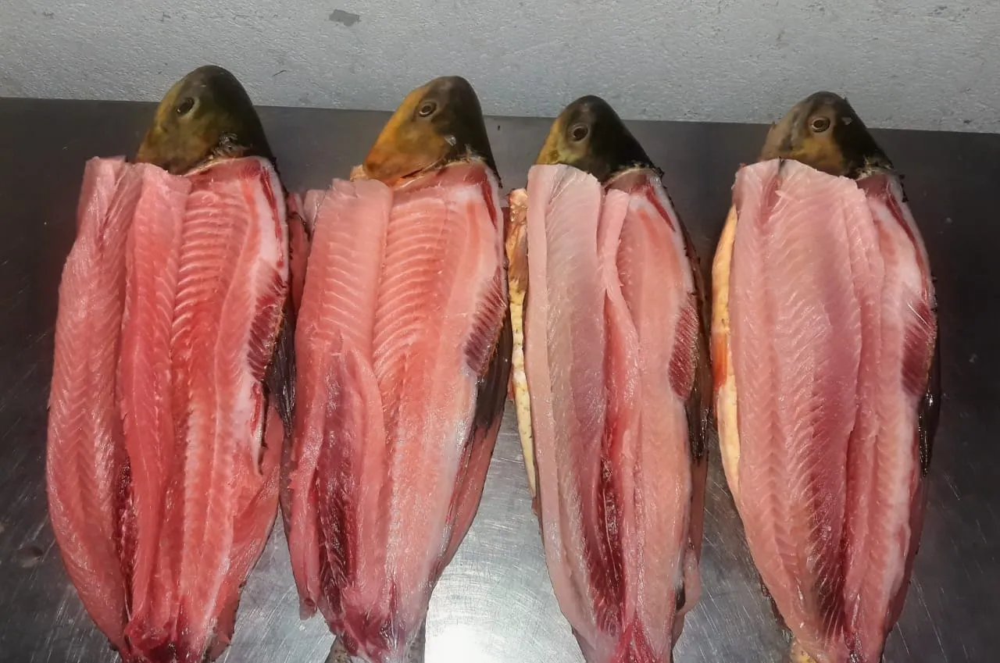

Piauçu Fresco
Leporinus macrocephalus
Escolha o Corte:
Resposta rápida pelo WhatsApp. Entregamos em Cáceres e região.
Piauçu: O Sabor Genuíno da Bacia do Rio Paraguai
O Piauçu (Leporinus macrocephalus) é um peixe nativo das bacias hidrográficas do Centro-Oeste e do Pantanal, com forte presença no Rio Paraguai e nos seus tributários. Reconhecível pela coloração amarelada com listras transversais escuras e pela cabeça proporcionalmente maior — daí o epíteto científico macrocephalus —, o Piauçu atinge entre 1 e 5 quilos na fase adulta e é capturado durante boa parte do ano, respeitando o período de defeso. Sua carne é branca, de textura macia e sabor suave com delicado toque adocicado, tornando-o uma das opções mais acessíveis e versáteis entre os peixes de rio do Pantanal.
Por que o Piauçu Agrada a Todos os Paladares
Diferente de peixes com sabor mais intenso como o Dourado ou o Pacu, o Piauçu tem um perfil gustativo equilibrado que não intimida quem está experimentando peixe de rio pela primeira vez. Seu baixo teor de gordura e a ausência de sabor "forte" fazem dele uma escolha frequente para crianças e para quem prefere preparos mais leves. A carne macia cozinha rapidamente — em menos de 20 minutos no forno e cerca de 15 minutos no ensopado —, o que o torna prático para refeições do dia a dia sem abrir mão do sabor autêntico do peixe fresco de rio.
Melhores Formas de Preparar o Piauçu
O Piauçu inteiro assado no forno com tomate, cebola, pimentão, azeite e ervas finas é o preparo mais simples e recompensador — fica pronto em cerca de 35 minutos e chega à mesa suculento com um molho natural formado pelos seus próprios sucos. Em postas, é excelente para o ensopado de piauçu: refogue alho e cebola, adicione tomate e pimentão picados, coloque as postas e cubra com água. Em 20 minutos, o caldo encorpado e aromático está pronto para ser servido com arroz e farinha. O Piauçu frito inteiro, com pele crocante e interior macio, é outro clássico regional que faz sucesso em qualquer mesa pantaneira.
Piauçu Fresco na Peixaria Rio Paraguai
Trabalhamos com Piauçu capturado no Rio Paraguai e em rios da região de Cáceres, sempre dentro do período permitido pela legislação ambiental de Mato Grosso. O peixe chega ao nosso balcão fresquíssimo e é preparado — escamado, eviscerado e cortado no corte de sua preferência — na hora do pedido. Consulte a disponibilidade pelo WhatsApp e faça sua encomenda com antecedência para garantir o melhor peixe do dia.